| Compression de données |
STRUCTURES DYNAMIQUES
COMPRESSION DE DONNEES

I- A PROPOS DE LA COMPRESSION DE DONNEES
II- CODAGE DE HUFFMAN
1- Algorithme
2- Décodage
III- CODINGfile://huffman.pas
IV- LIMITATION DU PROGRAMME
La dernière fois nous avons vu quelques structures dynamiques. En apparence assez abstraites, nous avons essayé d’en donner quelques applications. Nous allons ici voir un très bon exemple d’application : la compression de donnée. Il n’est pas question ici de débattre sur les méthodes de compression de donnée (on réservera une série d’articles intéressant s’il y a suffisamment de demande :) mais de voir une des méthodes les plus populaires : le codage de Huffman. Le codage de Huffman est assez simple à comprendre mais vraiment difficile à implémenter pour le programmeur débutant.
Après une légère introduction à la compression de donnée, nous allons étudier le codage de Huffman et surtout son implentation. Etant donnée que le dernier article rédigé en Pascal n’a suscité aucune critique, nous allons continuer dans ce langage.
I- A PROPOS DE LA COMPRESSION DE DONNEES
Bien que le prix du Mega-Octet soit relativement faible, il est toujours frustrant de gaspiller de précieux octets. Et lorsqu’il s’agit de transmettre un fichier, le facteur 10 peut cette fois ci coûter très cher. C’est pourquoi on utilise souvent des utilitaires de compressions de données : Winzip est certainement le plus connu des Windoziens, gzip, zoo, rar…. Le principe est simple : on sélectionne un fichier et on le " zip " afin de réduire sa taille. Il est intéressant de voir que le fichier se suffit à lui-même ; il n’y a en effet pas besoin de garder une autre trace de la compression dans un fichier annexe.
On distingue usuellement 2 types de compression : les compressions dites destructives et les compressions dites non-destructives. La première catégories portent sur les fichiers auxquels on tolère une légère variation du message. On toléra par exemple une légère variation du contraste d’une image (imperceptible à l’œil humain) ou encore on supprimera certaines gammes d’onde inaudible pour l’oreille humaine (MP3). Ensuite, on a les compression non-destructive ( c’est d’ailleurs celles-ci auxquelles nous nous intéresserons), le message est exactement le même avant la compression et après la décompression : on ne peut par exemple envisager une variation du code d’un fichier exécutable.
L’idée générale à dégager de ces algorithmes est un codage en fréquence. Tout fichier informatique est codé avec des octets, ceux ci étant mis bout à bout ont une certaine signification. L’idée de la compression non-destructive est de codé les octets (et plus généralement des blocs) n’ont pas avec une taille fixe mais avec une taille inversement proportionnelle à leurs fréquences d’apparition. Ainsi, au plus un caractère sera présent dans le fichier au moins il faudra de bits (cette fois ci on raisonne en unité binaire) pour coder ce caractère.
On peut déjà se poser une question concernant un tel fichier. Si les caractères sont codés avec des tailles différentes, comment les reconnaître. En recevant 010100, devrais-je lire 0101 00 ou 010 100 ? On peut préconiser dans un premier temps d’utiliser un caractère de contrôle pour délimiter les différents bits. Mais dans le cas où il faut compresser des données, on risque de gonfler considérablement le fichier et de perdre toute la place gagnée par le codage en fréquence. Heureusement ce problème va se résoudre de lui même, notamment grâce à la structure d’arbre…
II- CODAGE DE HUFFMAN
1- Algorithme
L’objet avec lequel on va travailler sera l’octet. La première étape du codage de Huffman est de dénombrer les caractères présents dans le fichier ; cette étape consistera d’une part à recenser les caractères et d’autre part à évaluer leur poids dans le fichier (c’est-à-dire le nombre de fois dans lequel ils apparaissent). Le plus simple est de prendre un exemple sur la phrase " tipiak_ititiation "
| t | i | p | a | _ | n | o | k |
| 4 | 6 | 1 | 2 | 1 | 1 | 1 | 1 |
j’ai mis un t supplémentaire pour que l’exemple marche bien :-) Cela ne nuit pas à la généralisation…
On place le poids et le caractère dans une liste chaînée. On va de plus demander à cette liste d’avoir une structure de liste triée.
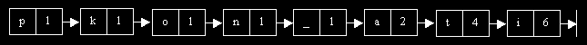
On reconnais ici la structure de liste chaînée. Que contient nos chaînons ? on doit stocker un couple ( chaîne , poids ). En fait, on va anticiper sur la suite ; on va en effet utiliser une structure d’arbre. Notre schéma précédent devient donc :
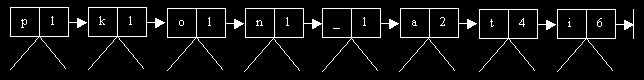
Nos arbres (chaque couple est le père) ne possèdent dans un premier temps aucun fils. Apres avoir initialisé notre liste, on va commencer l’algorithme de construction de Huffman.
Le but de l’algorithme va être de construire un arbre dont les feuilles seront les caractères présents dans le fichier et dont la feuille la plus proche du nœud principal (d’un point de vue : nombre de nœud les séparant) sera le caractère dont le poids est le plus faible. On va pour cela effectuer une nouvelle opération sur les arbres binaires : la fusion simple. On va l’illustrer sur un exemple :
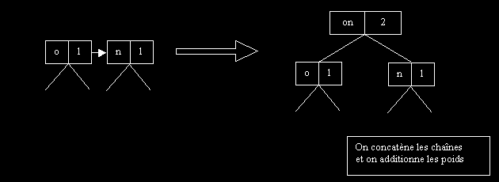
On va ainsi fusionner chacun des arbres de la liste chaînée. Dans quel ordre opérer ? La fusion se fait à chaque fois sur les 2 plus petits couples de poids le plus faible. Etant donnée, que la liste est triée, il suffira à chaque fois de fusionner les deux premiers couples.
On peut d’hors et déjà faire deux remarques importantes :
-Apres avoir fusionner deux arbres, il faudra replacer le nouvelle arbre dans la liste chaîné. En effet, notre hypothèse de travail suppose que les deux plus petit arbres de poids le plus faible sont situé en tête de liste. Donc, il faudra créer une procédure pour insérer l’arbre au bon endroit dans la liste chaîné.
-Si plusieurs arbres de la listes chaînée ont le même poids, on fera un sous tri. On classera les arbres par ordre décroissant de taille des chaînes. Donnons un exemple :
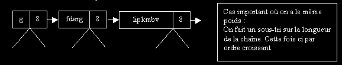
On va maintenant suivre l’algorithme de fusion décrit précédent étape par étape :
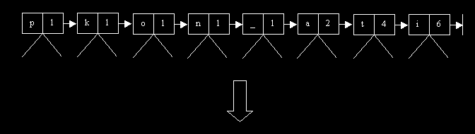
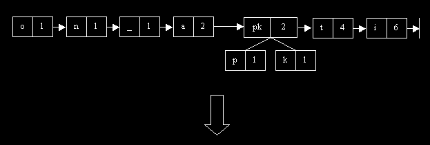
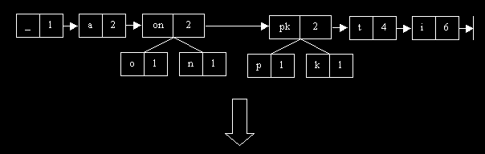
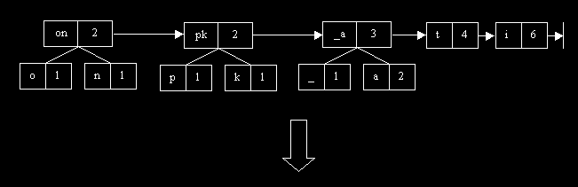
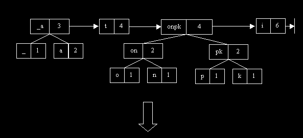
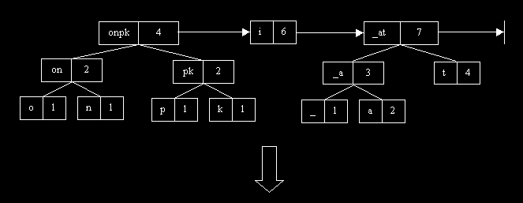
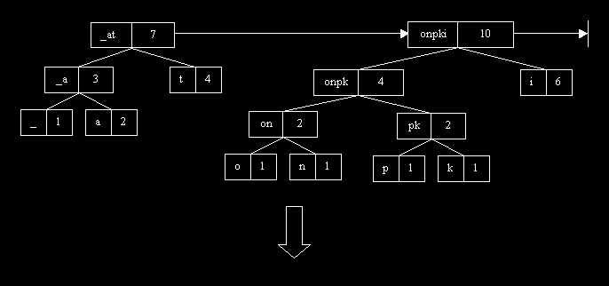
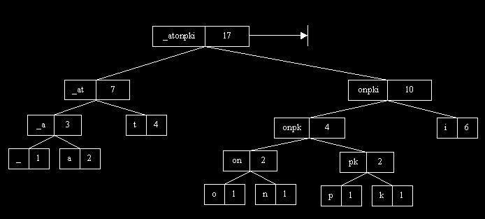
OUF !
J’ai détaillé chaque étape de la construction de l’arbre (celle que nous suivrons d’ailleurs). On tiens bien compte à chaque fois des règles gérant la construction de l’arbre (notamment le cas où les poids sont égaux).
On va maintenant prendre un point de vue un peu plus général ; notre arbre ressemble finalement à ça :
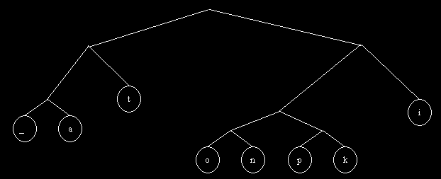
On a ici le squelette de l’arbre précédent. On peut déjà constater 2 choses. Tout d’abord, les feuilles de l’arbre sont constituées par les caractères présent dans le fichier : ceci est en fait une évidence lorsque l’on regarde comment à été construit l’arbre. Ensuite, on constate un point fondamentale du codage de Huffman : les caractères de poids le plus forts sont situés en hauteur dans l’arbre (t,i) tandis que les caractères de poids le plus faible sont eux placé en bas de l’arbre (n, o, p..). On a donc créé un algorithme permettant de séparer les caractères de poids faible et de poids important.
Afin d’utiliser ces propriétés de l’arbre de Huffman, on va orienter l’arbre. Pour se déplacer sur le sous arbre gauche, on comptera 0 et pour se déplacer vers la droite on comptera 1.
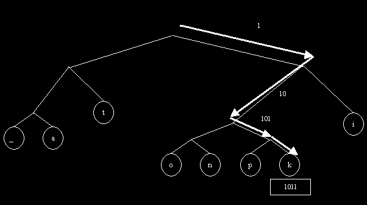
On va donc recoder entièrement les caractères présents dans le fichier en déterminant le chemin à suivre pour chaque arbre. On obtient donc le tableau suivant :
|
_ |
000 |
|
a |
001 |
|
t |
01 |
|
o |
1000 |
|
n |
1001 |
|
p |
1010 |
|
k |
1011 |
|
i |
11 |
On constate bien le codage en fréquence dont on parlait au début de l’article. Les caractères les plus fréquents sont codés avec un nombre de bit moindre (conséquence directe de leur place dans l’arbre).
Le recodage des caractères est remarquable à première vu, mais il faut bien voir qu’à chaque arbre associe son recodage. Il faudra lors de la décompression trouver le moyen de reconstituer cette arbre pour retrouver le code de chaque caractère.
Un rapide calcul montre que sans compression de Huffman, il faut 17 *8 bits = 136 bits. Tandis qu’en utilisant le tableau précédent, la phrase " tipiak_ititiation " ce code avec les bits suivants :
01 11 1010 11 001 1011 000 11 01 11 01 11 001 01 11 1000 1001 soit 45 bits. On comblera les bits par des zéros pour avoir un multiple de 8.
2- Décodage
Pour le décodage d’une séquence binaire, il faut bien garder à l’esprit qu’à un fichier compressé correspond un et un seul arbre. Donc, on ne pourra dissocier arbre et fichier binaire. Ainsi, si je reçoie la séquence précédente : 01 11 1010 11 001 1011 000 11 01 11 01 11 001 01 11 1000 1001 il suffira de parcourir l’arbre précédent pour retrouver de manière unique la phrase " tipiak_ititiation ".
Toute la difficulté réside donc dans le fait de pouvoir stocker l’arbre dans un fichier.
Quelques propriétés du codage de Huffman
Le codage de Huffman possède 3 propriétés intéressantes :
III- CODING
Nous venons de voir la théorie, passons à la pratique…
Le codage de Huffman est assez délicat à implémenter mais il se révèle un véritable jeux d’enfant si on pense à poser correctement les objets avec lesquels on va manipuler : arbre, liste, couple….
Je vous préviens tout de suite que la manière dont je vais programmer le code de Huffman n’est absolument pas la meilleure mais n’est pas non-plus obsolète. Sans entrée dans la théorie de la complexité, si une procédures doit ce codé en un temps proportionnel à log(n) (parcours d’un arbre) alors les procédures qu vont suivre respecteront ce temps de parcours. Par contre une optimisation pourrai se faire au niveau des cycles par exemple. (Chose perdu d’avance pour un programme écrit en pascal :-)
Commençons donc naturellement par les Type de données :
| CONST
nb_car_max= 255 ; { Nombre de caractère maximal à dénombrer – On
travail ici avec des octets
On pourrait envisager travailler avec des nibbles } TYPE str = string[nb_car_max]; { Type chaîne pour la concaténation des caractères } tab_car = array [1..nb_car_max] of char; { Caractère présent sur les nb_car_max } tab_int = array [1..nb_car_max] of longint; { Nombre d'occurence – on utilise un longint} paire = record
end; arbre = ^nœud; { Structure d'arbre binaire avec ( poids, chaine ) } noeud = record
end; pdoublet= ^doublet; doublet = record
end; |
On va poser un certain nombre de variable global pour éviter de trop gros passage en argument.
| VAR
VarBit : array [1..8] of byte ; { Contient les puissances de 2 } nb_car : longint; { Nombre de caractère distinct } frequence: tab_int; { cf. Déclaration des types } car : tab_car; BufferTexte : string; {Stockage temporaire du code binaire en string – On verra par la suite son usage } huff : arbre; { Arbre de Huffman } |
Comme dans tous programmes, il y la phase d’initialisation des données :
| PROCEDURE
Initialisations(nomfichier: string);
{ Lecture du fichier et mise-a-jour des tableaux pour construire l'arbre } VAR j:longint; PROCEDURE Initialisations(nomfichier: string); { Lecture du fichier et mise-a-jour des tableaux pour construire l'arbre } VAR j:longint; car_cour:char; entree: file of char; BEGIN nb_car:=0; for j:=1 to nb_car_max do begin
assign(entree, nomfichier); { Ouverture du fichier } reset(entree); while not(eof(entree)) do begin
end; close(entree); END; |
On va commencer l’algorithme de création : construction de la liste chaînée initiale. Pour cela on va créer 2 procédures : une procédure d’insertion et une procédure de création.
La procédure d’insertion aura pour but d’insérer dans la liste un couple (caractère, poids) (c’est-à-dire un arbre sans fils) ; cette procédure devra insérer au bon endroit en respectant l’ordre des poids (ordre décroissant d’après les explications de l’algorithme). Afin d’anticiper sur ce qui va suivre, on va prendre en compte le cas particulier ou plusieurs couples ont le même poids. D’après la description de l’algorithme, il faut dans ce cas trier dans l’ordre décroissant les chaînons.
La procédure de création suit le schéma classique de la création d’une liste trié. On commence par un liste vide NIL et on insère au fur et à mesure les couples recensé par Initialisation. On obtient ainsi les procédures suivantes :
| FUNCTION
Insere(d, lst: pdoublet): pdoublet;
{ Insertion dans la liste chainée triée } { Argument : d à inserer dans lst } BEGIN if (lst=nil) then insere:=d else IF (d^.rac^.info.poids<=lst^.rac^.info.poids) then begin { Première relation d’ordre }
else begin
END; |
| FUNCTION
CreerListe : pdoublet;
{ Création de la liste initiale (triée) avant de faire les fusions des cases de poids le moins fort } VAR d,liste_provisoire:pdoublet; arb_solo:arbre; j:longint; BEGIN liste_provisoire:=nil; for j:=1 to nb_car do begin
Creerliste:=liste_provisoire; END; |
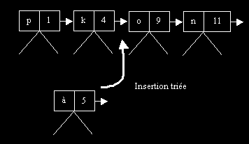
On commence maintenant la fusion des arbres pour créer l’arbre de Huffman. Afin d’alléger le code, on va utiliser une procédure Fusion, dont le but (vous l’aurez deviné :-) est de fusionner deux arbres vu dans la description de l’algorithme. La procédure CreerArbre va fusionner à chaque fois les deux plus petits couples de poids le plus faible (c’est-à-dire les deux premiers chainons de la liste car celle-ci est triée) jusqu’à obtenir un seul et unique chaînon. Ceci marque en effet la fin de la création de l’arbre.
| FUNCTION
Fusion(a1, a2:arbre) :arbre;
{ Fusion de 2 arbres } VAR a:arbre; BEGIN new(a); a^.info.chaine:=concat(a1^.info.chaine, a2^.info.chaine); {Fusion simple d’arbre } a^.info.poids:=a1^.info.poids+a2^.info.poids; a^.fg:=a1; a^.fd:=a2; fusion:=a; END; |
| FUNCTION
CreerArbre(lst: pdoublet): arbre;
{ Création de l'arbre de Huffman en effectuant des fusions successives } VAR p:pdoublet; a:arbre; BEGIN p:=lst; while (p^.suiv <> nil) do begin {Tant que la liste est non vide }
CreerArbre:=p^.rac; END; |
La fonction renvoie l’arbre de Huffman. Il nous reste maintenant à chaque fois à parcourir l’arbre pour retrouver le code d’un caractère (suivant la méthode décrite dans l’algorithme : 1 à droite, 0 à gauche). Le première idée que l’on pourrais avoir serait de placer exactement dans un tableau les n valeurs de recodage des caractères présents dans le fichier. Mais nous perdons là tout l’intérêt d’arbre binaire ! Souvenez vous dans l’article précédent nous avons vu comment la recherche dans un ABR (Arbre Binaire de Recherche) est rapide Ici ce ne sont pas les nombres qui font notre relation d’ordre mais l’appartenance ou non du caractère dans la chaîne. Pour parcourir cette arbre on va étudier si le caractère que l’on veut coder est oui ou non dans le sous-arbre choisi par exemple :
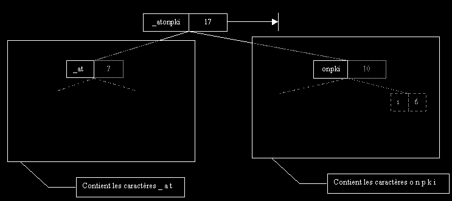
On voit donc qu’on retrouve bien notre structure d’ABR de l’article précédent
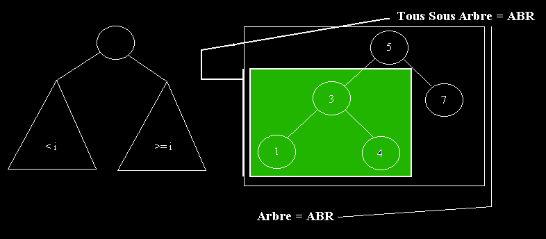
Tout cela pour dire qu’il faut favoriser cette structure pour retrouver un temps de recherche en ln(n). Le temps de recherche dans un ABR est beaucoup plus court que dans un tableau par exemple.
Reste maintenant à écrire cette procédure de recherche. Pour cela on va d’abord écrire une procédure d’appartenance à une chaîne de caractère :
| FUNCTION
Appartient(c: char ; ch: str): boolean;
{ Teste si c est dans ch } VAR j,l:longint; BEGIN l:=length(ch); j:=1; while ((j<=l) and (c <> ch[j])) do inc(j); {On parcours la chaîne sans jamais dépasser la taille de la chaîne }
END; |
Dans la fonction code_un_car, on va tout simplement parcourir l’arbre jusqu’à obtenir la feuille désirée. On se promène dans l’arbre en testant à chaque fois l’appartenance du caractère dans les chaînes des sous arbres.
| FUNCTION
Code_un_car(c:char; huff:arbre):string;
{ Retourne l'équivalent d'un caractère dans l'arbre de Huffman } VAR i:integer; h_g:arbre; s,zero,un:string; { s contiendra un string contenant la traduction du code en binaire 010 ó " 010 " BEGIN i:=0; zero:='0'; un:='1'; s:=''; while length(huff^.info.chaine)>1 do begin
code_un_car:=s; { On renvoie la traduction binaire du code considéré } END; |
On arrive au point final du codage de Huffman : la compression effective du fichier. Ici le codage est relativement délicat car on est (pour la première fois) confronté à une difficulté technique qu’il faudra contourner. Il faut savoir que l’écriture et la lecture d’un fichier ne peut se faire que par multiple de 8 bits. On ne peut concevoir d’écrire bit par bit le fichier informatique. On va donc utiliser un buffer de 8 bits (un buffer plus grand augmenterai encore la vitesse de transfert mais on s’égarerai de l’objectif de ce tutorial). Souvent le codage d’un caractère entraînera un code inférieur à 8 bits : il faudra attendre un autre caractère pour que (au moins) 8 bits du buffer soit présent. Là seulement on pourra écrire physiquement sur le disque dur. Afin de prévoir la décompression du fichier, on va stocker la taille initiale du fichier traiter.
Le but de ce tutorial est de coder la méthode de Huffman et en aucun cas de construire un logiciel de compression de données. C’est pourquoi le même programme compressera et décompressera un fichier. Ceci implique une chose : le programme ne stocke pas l’arbre dans le fichier. Un véritable logiciel stockerai dans un header l’arbre afin d’obtenir un file totalement indépendant. Ici on simplifie le problème en gardant en mémoire vive l’arbre de Huffman. Je restreint donc délibérément l’usage de ce programme comme programme d’application. Toutefois, ceux qui sont intéressé ou éprouve des difficultés à concrétiser un tel header peuvent toujours me joindre à mon adresse email, je me ferai un plaisir de leurs expliquer. Par ailleurs, ceci est un très bon exemple pour évaluer votre autonomie à un moment donner de l’explication du codage de Huffman.
En accord avec ce qui suit on trouve donc la procédure suivante pour compresser un fichier :
| PROCEDURE
CompressFichier(nom_entree, nom_sortie:string;arb: arbre);
{ Compression du fichier nom_entree => nom_sortie grace à l'arbre arb } VAR entree: File of char; sortie: File of byte; sortie_temp: file of longint; L : longint; i,j:longint; temp: byte; PROCEDURE LectureBufferTexte; { Ajoute un caractère au buffer – on parle ici du code binaire équivalen t} VAR temp:string; buff:char; BEGIN read(entree,Buff); temp:=Code_un_car(Buff, arb); BufferTexte:=Concat(BufferTexte,temp); END; FUNCTION GetByte:byte; { Convertit le buffer en sa représentation binaire } VAR i,bit:byte; BEGIN bit:=0; For i:=1 to 8 do if (BufferTexte[i]='1') then begin
Delete(BufferTexte, 1 ,8); GetByte:=bit; END; PROCEDURE EcritureBuffer; { Ecriture du buffer dans le fichier } VAR temp:byte; BEGIN while (length(BufferTexte)>=8) do begin{ Des que 8 bits sont retenue on ecris sur le disque dur }
END; PROCEDURE ClearBuffer; { Purge les bits restant du buffer } VAR bit:byte; i:integer; BEGIN bit:=0; for i:=1 to length(BufferTexte) do
write(sortie, bit); END; BEGIN { Procedure principale } assign(entree, nom_entree); { ouverture du fichier en lecture } reset(entree); assign(sortie_temp, nom_sortie); rewrite(sortie_temp); L:=Filesize(entree); write(sortie_temp, L); { Ecriture de la taille du fichier } close(sortie_temp); assign(sortie, nom_sortie); { ouverture du fichier en écriture } reset(sortie); seek(sortie, Filesize(sortie)); BufferTexte:=''; { buffer initialement vide } while not(eof(entree)) do begin
ClearBuffer; { on purge tout le buffer } close(sortie); close(entree); END; |
Entamons maintenant la phase de décompression. Comme évoqué précédemment, on suppose que l’arbre déjà en mémoire. Il suffirait dans le cas pratique de le stocker dans le fichier compressé en prenant garde de ne pas gaspiller les octets précieusement gagnés :) La décompression est beaucoup plus rapide que la compression. On décompte bit par bit le fichier. Et on parcours au fur et à mesure l’arbre suivant les bits reçu. La procédure de décompression en deviens naturelle. On utilise la taille du fichier précédemment stocké dans le header comme condition d’arrêt.
| PROCEDURE DecompressFichier(nom_entree,
nom_sortie:string ;arb:arbre);
{ Parcours de l'arbre à chaque caractère lu } { Sortie dans le fichier nom_sortie } VAR entree: File of byte; sortie: File of char; entree_temp: File of Longint; L,j:longint; bit,octet:byte; i,k:longint; c:char; FUNCTION Decodecar(arb:arbre ; VAR i:longint; VAR bit:byte) :char; VAR stop:boolean; bit_temp: byte; BEGIN stop:=false; while (not(stop) and not(keypressed) )do begin while ((i<=8) and not(stop)) do begin bit_temp := bit and VARBit[i]; if (bit_temp=VARBit[i]) then begin
inc(i); if (length(arb^.info.chaine)=1) then begin
end; if (i>8) then begin
end; END; BEGIN assign(entree_temp, nom_entree); reset(entree_temp); read(entree_temp, L); assign(entree, nom_entree); assign(sortie, nom_sortie); reset(entree); seek(entree, 4); rewrite(sortie); { lecture de la taille du fchier } read(entree, bit); i:=1; j:=1; while ((j<L) and not(keypressed) )do begin
close(sortie); close(entree); END; |
IV- LIMITATION DU PROGRAMME
Si on relie la démarche suivie, on tiens en compte que le fichier possède des caractéristiques statistiques particulières (fréquence d’un caractère particulièrement élevé). Toutefois, il arrive que ces singularités n’apparaissent pas sur certain type de fichier. Dans de telle situation le codage de Huffman est catastrophique : le fichier compressé est parfois plus grand que le fichier non-compressé ! On comprendra donc pourquoi le programme précédent fonctionne surtout pour les fichiers images et textes.
Il faut savoir que les méthodes utilisées par Winzip sont des méthode dites Lempev Ziv ou compression par dictionnaire. L’idée générale est la même que pour la compression de Huffman, mise à part qu’au lieu de traiter un seul et unique caractère, on traite un mot entier. Dans un tableau on répertorie les mots les plus fréquemment utilisés et on détermine un code plus court pour représenter ces mots. Le codage de la méthode par dictionnaire sera peut-être évoquées dans de futurs articles.
Les sources gracieusement offertes ne vous donneront en aucun cas après compilation d’un logiciel tout fait. Afin d’en obtenir un, il vous faudra mettre main à la patte ; d’une part en intégrant dans le header l’arbre binaire (je répète qu’en cas de difficulté vous pouvez toujours me mailer :), d’autre part il faudra séparer le programme de compression et décompression pour mettre inline vos arguments (fichier compressé etc)… Et après même tout ces efforts vous risquez d’être déçu par les résultats obtenu mais croyez moi vous aurez appris déjà beaucoup….
Pour toutes questions, commentaires, critiques, erreurs: sabrina@inorbit.com